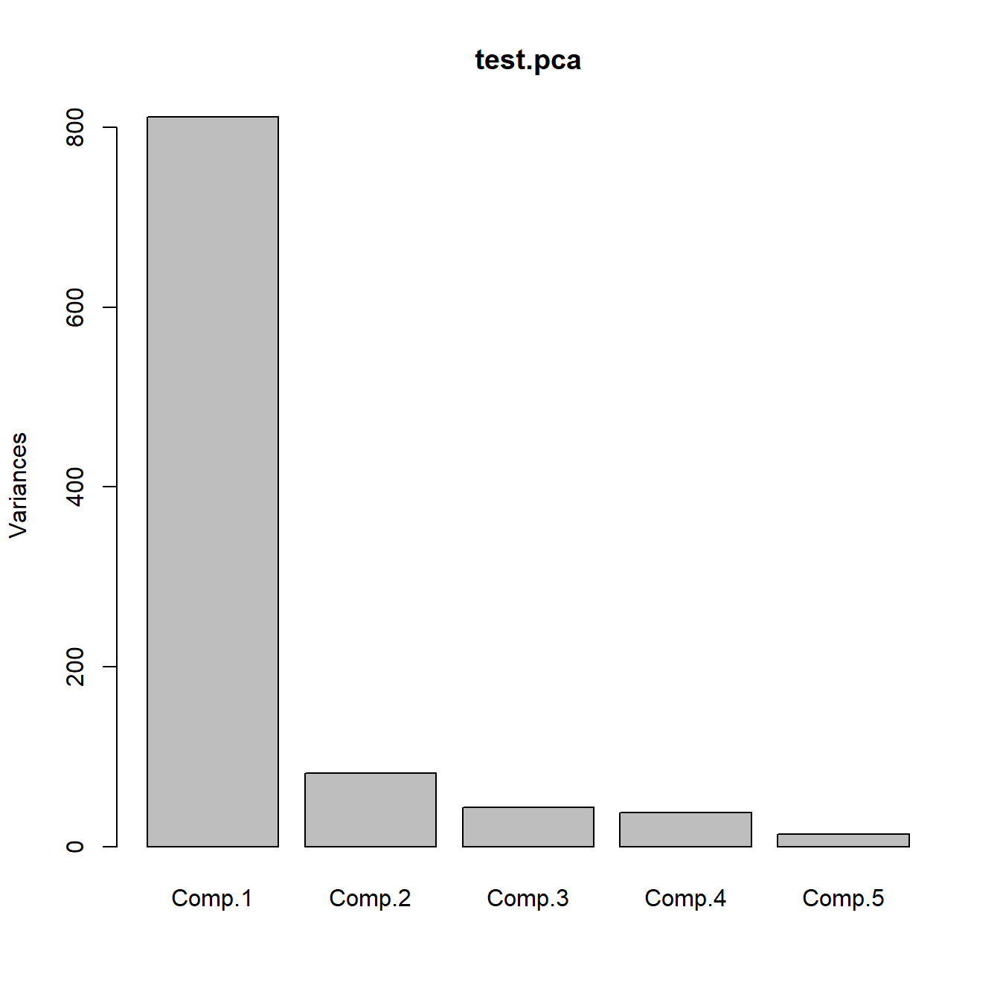
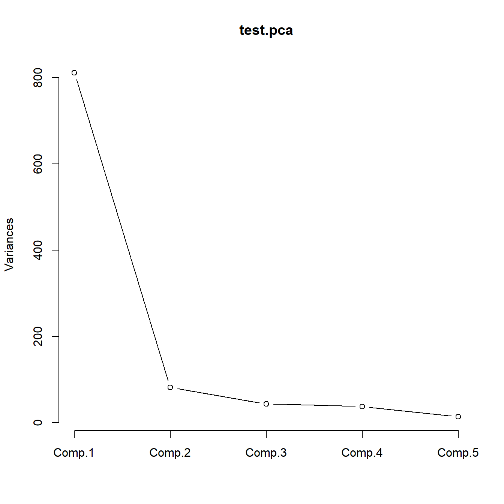
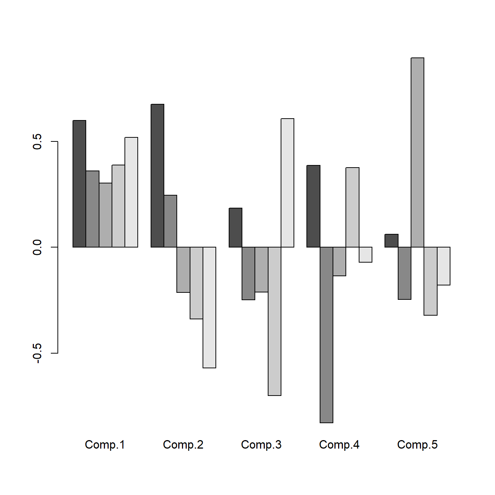
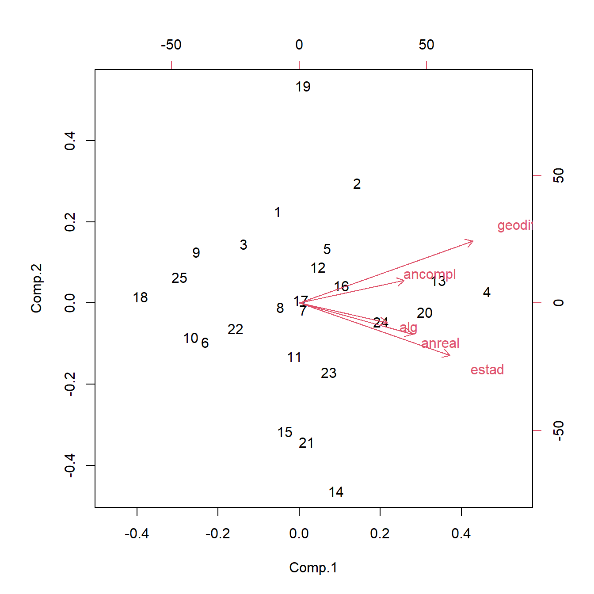

4.1 Descomposición de un vector aleatorio en sus componentes principales
En esta sección se va a definir el concepto de componentes principales, y cómo se obtienen a partir de la matriz de covarianzas de un vector aleatorio. Estas ideas y procedimientos se aplican de igual modo tanto a un vector aleatorio como a un conjunto de datos. En este último caso, se puede pensar que el análisis se está aplicando a una distribución de probabilidad discreta equiprobable sobre los vectores observados. Por este motivo, esta sección se desarrolla sobre un vector aleatorio general, con la única condición de que exista la matriz de covarianzas.
Definición 4.1 Sea \(\bm{x}=(x_1,\ldots,x_d)^\prime{}\) un vector aleatorio \(d\)-dimensional con vector de medias \(\bm\mu=E({\bm{x}})\) y matriz de covarianzas \(\bm\Sigma=E((\bm{x}-\bm\mu)(\bm{x}-\bm\mu)^\prime{})\). Se define la primera componente principal de \(\bm{x}\) como una variable aleatoria \(z_1\) tal que
\[z_1=\bm{v_1}^{\prime}\bm{x}=v_{11}x_1+\cdots+v_{d1}x_d\ \ \ \mbox{con} \ \ \ \bm{v_1}=(v_{11},\ldots,v_{d1})^{\prime} \in {\Bbb R}^d,\]
\[\textnormal{Var}(z_1)=\max\{\textnormal{Var}(\bm{v}^{\prime}\bm{x}):\bm{v}\in {\Bbb R}^d,\ \bm{v}^{\prime}\bm{v}=1\}.\] La primera componente principal es una combinación lineal normalizada de las variables de \(\bm{x}\) y, de entre todas las combinaciones lineales normalizadas, es la que tiene mayor varianza.
Nota. Debe observarse que \(\textnormal{Var}(\alpha \bm{v}^{\prime}\bm{x})=\alpha^2\textnormal{Var}(\bm{v}^{\prime}\bm{x})\) con \(\alpha\in {\Bbb R}\). De modo que multiplicando por una constante podemos hacer la varianza tan grande o tan pequeña como queramos. Por ello es necesario normalizar, pidiendo que \(\|\bm{v}\|=\sqrt{\bm{v}^{\prime}\bm{v}}=1\).
Teorema 4.1 La primera componente principal de \(\bm{x}\) adopta la forma
\[z_1=\bm{v_1}^{\prime}\bm{x},\] siendo \(\lambda_1\) el mayor autovalor de la matriz de covarianzas \(\bm\Sigma\) y \(\bm{v_1}\) un autovector asociado a \(\lambda_1\) de norma uno (\(\bm{v_1}^{\prime}\bm{v_1}=1\)). Además,
\[\textnormal{Var}(z_1)=\lambda_1.\]
Dem. Consideremos \(z=\bm{v}^{\prime}\bm{x}\). Entonces podemos calcular su varianza
\[\textnormal{Var}(z)=\textnormal{Cov}(\bm{v}^{\prime}\bm{x},\bm{v}^{\prime}\bm{x})=\bm{v}^{\prime}\textnormal{Cov}(\bm{x},\bm{x})\bm{v}=\bm{v}^{\prime}\bm\Sigma \bm{\bm{v}}.\] Nuestro problema consiste en calcular
\[\begin{array}{rl} \max & \bm{v}^{\prime}\bm\Sigma \bm{v} \\ \mbox{ sujeto a} & \bm{v}^{\prime}\bm{v}=1. \end{array}\] Resolvemos este problema por el método de los multiplicadores de Lagrange.
\[L=\bm{v}^{\prime}\bm\Sigma \bm{v}-\lambda(\bm{v}^{\prime}\bm{v}-1)\] Calculamos la matriz jacobiana de \(L\) como función de \(\bm{v}\) e igualamos a cero
\[\frac{\partial L}{\partial \bm{v}}=2\bm{v}^{\prime}\bm\Sigma-2\lambda \bm{v}^{\prime}=0.\] Equivalentemente \[\bm\Sigma \bm{v}=\lambda \bm{v}.\] Luego el vector \(\bm{v_1}\) que maximice la función sujeto a la restricción ha de ser un autovector de \(\bm\Sigma\), y su autovalor asociado es \(\lambda_1\). Multiplicando los dos términos de la ecuación por la izquierda por \(\bm{v_1}^{\prime}\) resulta
\[\bm{v_1}^{\prime}\bm\Sigma \bm{v_1}=\bm{v_1}^{\prime}\lambda_1 \bm{v_1}=\lambda_1 \bm{v_1}^{\prime} \bm{v_1}=\lambda_1.\] Luego el autovalor \(\lambda_1\) es la función objetivo en el máximo y por tanto, \(\textnormal{Var}(z_1)=\lambda_1\).
Definición 4.2 Se define la segunda componente principal de \(\bm{x}\) como una variable aleatoria \(z_2\) tal que
\[z_2=\bm{v_2}^{\prime}\bm{x}=v_{12}x_1+\cdots+v_{d2}x_d\ \ \ \mbox{con}\ \ \ \bm{v_2}=(v_{12},\ldots,v_{d2})^{\prime} \in {\Bbb R}^d,\]
\[\textnormal{Var}(z_2)=\max\{\textnormal{Var}(\bm{v}^{\prime}\bm{x}):\bm{v}\in {\Bbb R}^d,\ \bm{v}^{\prime}\bm{v}=1,\ \bm{v}^{\prime}\bm{v_1}=0\}.\] La segunda componente principal es otra combinación lineal de las variables de \(\bm{x}\) y, de entre todas las combinaciones lineales formadas por vectores unitarios ortogonales a \(\bm{v_1}\), es la que tiene mayor varianza.
Nótese que
\[\textnormal{Cov}(\bm{v}^{\prime}\bm{x},z_1)=\textnormal{Cov}(\bm{v}^{\prime}\bm{x}, \bm{v_1}^{\prime}\bm{x})=\bm{v}^{\prime}\textnormal{Cov}(\bm{x},\bm{x})\bm{v_1}=\bm{v}^{\prime}\bm\Sigma \bm{v_1}.\]
Enunciamos a continuación un resultado sencillo.
Resultado. Sea \(\bm{w}\in {\Bbb R}^d\) un autovector de \(\bm\Sigma\) asociado a un autovalor no nulo \(\lambda\neq 0\), y sea \(\bm{v}\in {\Bbb R}^d\). Entonces
\[\bm{v}^{\prime} \bm\Sigma \bm{w}=0 \Leftrightarrow \bm{v}^{\prime} \bm{w}=0.\]
Dem. En primer lugar,
\[\bm{v}^{\prime}\bm\Sigma \bm{w}=\bm{v}^{\prime}\lambda \bm{w}=\lambda \bm{v}^{\prime} \bm{w}=0.\]
En el otro sentido,
\[\bm{v}^{\prime} \bm{w}=\bm{v}^{\prime}\frac{1}{\lambda}\bm\Sigma \bm{w}=\frac{1}{\lambda} \bm{v}^{\prime}\bm\Sigma \bm{w} =\frac{1}{\lambda}0=0.\]
Por tanto, en aplicación de este resultado, \(\textnormal{Cov}(\bm{v}^{\prime}\bm{x},z_1)=0 \Leftrightarrow \bm{v}^{\prime} \bm{v_1}=0.\) Y hemos probado que la condición de ortogonalidad entre los vectores \(\bm{v_1}\) y \(\bm{v_2}\) es equivalente a la incorrelación de las componentes \(z_1\) y \(z_2\). En definitiva, podríamos definir la segunda componente principal como la combinación lineal de las variables de \(\bm{x}\) que tiene mayor varianza de entre las combinaciones lineales normalizadas e incorrelacionadas con la primera componente principal.
Respecto a la condición de que \(\lambda_1\neq 0\), hemos de recordar que \(\lambda_1=\textnormal{Var}(z_1)\). Por tanto si \(\lambda_1=\textnormal{Var}(z_1)=0\), todos los demás autovalores serán también cero y \(z_1\) y las demás componentes serán variables degeneradas.
Teorema 4.2 La segunda componente principal de \(\bm{x}\) adopta la forma
\[z_2=\bm{v_2}^{\prime}\bm{x}\] siendo \(\lambda_2\) el segundo mayor autovalor de la matriz de covarianzas \(\bm\Sigma\) y \(\bm{v_2}\) un autovector asociado a \(\lambda_2\) de norma uno (\(\bm{v_2}^{\prime}\bm{v_2}=1\)) y ortogonal a \(\bm{v_1}\) (\(\bm{v_1}^{\prime}\bm{v_2}=0\)). Además
\[\textnormal{Var}(z_2)=\lambda_2.\]
Dem. Procederemos de modo muy similar al caso anterior. Consideramos \(z=\bm{v}^{\prime}\bm{x}\), cuya varianza es \(\textnormal{Var}(z)=\bm{v}^{\prime}\bm\Sigma \bm{v}\). Nuestro problema consiste en
\[\begin{array}{rl} \max & \bm{v}^{\prime}\bm\Sigma \bm{v} \\ \mbox{ sujeto a} & \bm{v}^{\prime}\bm{v}=1, \\ & \bm{v_1}^{\prime} \bm{v}=0. \end{array}\] Resolvemos este problema por el método de los multiplicadores de Lagrange.
\[L=\bm{v}^{\prime}\bm\Sigma \bm{v}-\lambda_2(\bm{v}^{\prime}\bm{v}-1)-\gamma_2 \bm{v_1}^{\prime} \bm{v}.\] Derivamos respecto de \(\bm{v}\) e igualamos a cero (momento en el cual podemos sustituir el valor \(\bm{v_2}\) para mejor comprensión):
\[\begin{equation} \left(\frac{\partial L}{\partial \bm{v}}/_{\bm{v}=\bm{v_2}}\right)^{\prime} =2\bm\Sigma \bm{v_2}-2\lambda_2 \bm{v_2}-\gamma_2\bm{v_1}=0. \tag{4.1} \end{equation}\]
Multiplicando por la izquierda por \(\bm{v_1}^{\prime}\) resulta
\[2\bm{v_1}^{\prime}\bm\Sigma \bm{v_2} - 2\lambda_2 \bm{v_1}^{\prime} \bm{v_2} - \gamma_2 \bm{v_1}^{\prime}\bm{v_1} =0.\] Las restricciones imponen que \(\bm{v_1}^{\prime}\bm{v_2}=0\). Por la nota, de ello deducimos que \(\bm{v_1}^{\prime}\bm\Sigma \bm{v_2}=0\). Y \(\bm{v_1}\) ya verificaba \(\bm{v_1}^{\prime}\bm{v_1}=1\). Entonces la ecuación anterior se reduce a \(\gamma_2=0\). Y al sustituir ese valor en la ecuación (4.1) se obtiene
\[\bm\Sigma \bm{v_2}=\lambda_2 \bm{v_2}.\] Razonando igual que antes, el vector \(\bm{v_2}\) que maximice la función sujeto a las restricciones ha de ser un autovector de \(\bm\Sigma\), y su autovalor asociado es \(\lambda_2\). La restricción de ortogonalidad respecto de \(\bm{v_1}\) nos obliga a tomar el segundo mayor autovalor de \(\bm\Sigma\). Como antes, \(\textnormal{Var}(z_2)=\bm{v_2}^{\prime}\bm\Sigma \bm{v_2}=\lambda_2\).
Podríamos continuar este proceso extrayendo las componentes principales de \(\bm{x}\) mediante los autovalores de la matriz de covarianzas \(\bm\Sigma\) y la base ortonormal de autovectores asociados. De este modo, obtenemos p componentes principales.
Definición 4.3 Se definen las \(d\) componentes principales de \(\bm{x}\) como las variables aleatorias \((z_1,\ldots,z_d)\) tales que
\[z_1=\bm{v_1}^{\prime}\bm{x},\ldots,z_d=\bm{v_d}^{\prime}\bm{x},\ \ \ \ \ \ \ \bm{v_1},\ldots,\bm{v_d}\in {\Bbb R}^d.\]
\[\begin{aligned} \textnormal{Var}(z_1)&=\max\{\textnormal{Var}(\bm{v}^{\prime}\bm{x}):\bm{v}\in {\Bbb R}^d,\ \bm{v}^{\prime}\bm{v}=1\}, \\ \textnormal{Var}(z_2)&=\max\{\textnormal{Var}(\bm{v}^{\prime}\bm{x}):\bm{v}\in {\Bbb R}^d,\ \bm{v}^{\prime}\bm{v}=1,\ \bm{v_1}^{\prime}\bm{v}=0\}, \\ &\vdots \\ \textnormal{Var}(z_j)&=\max\{\textnormal{Var}(\bm{v}^{\prime}\bm{x}):\bm{v}\in {\Bbb R}^d,\ \bm{v}^{\prime}\bm{v}=1, \ \bm{v_1}^{\prime}\bm{v}=0,\ldots,\ \bm{v_{j-1}}^{\prime}\bm{v}=0\}, \\ &\vdots \\ \textnormal{Var}(z_d)&=\max\{\textnormal{Var}(\bm{v}^{\prime}\bm{x}):\bm{v}\in {\Bbb R}^d,\ \bm{v}^{\prime}\bm{v}=1, \ \bm{v_1}^{\prime}\bm{v}=0,\ldots,\ \bm{v_{d-1}}^{\prime}\bm{v}=0\}.\end{aligned}\]
Teorema 4.3 Las \(d\) componentes principales de \(\bm{x}\) adoptan la forma
\[z_j=\bm{v_j}^{\prime}\bm{x}\ \ \ j\in\{1,\ldots,d\}\] siendo \(\lambda_1\geq\ldots\geq\lambda_d\geq 0\) los \(d\) autovalores ordenados de la matriz de covarianzas \(\bm\Sigma\) y \(\bm{v_1},\ldots,\bm{v_d}\) sus autovectores asociados normalizados, esto es, \(\{\bm{v_1},\ldots,\bm{v_d}\}\) es una base ortonormal de autovectores. Además \(\textnormal{Cov}(z_j,z_k)=0\ \ \mbox{si}\ \ j\neq k\) y
\[\textnormal{Var}(z_j)=\lambda_j\ \ \ j\in\{1,\ldots,d\}.\]
Este teorema nos permite expresar \[\bm{z}=\bm{V}^{\prime}\bm{x}\] siendo \(\bm{z}=(z_1,\ldots,z_d)^\prime{}\) y \(\bm{V}=(\bm{v_1},\ldots,\bm{v_d})\) la matriz cuyas columnas son los autovectores de \(\bm\Sigma\). Entonces
\[\textnormal{Cov}(\bm{z},\bm{z})=\textnormal{Cov}(\bm{V}^{\prime}\bm{x},\bm{V}^{\prime}\bm{x})=\bm{V}^{\prime}\textnormal{Cov}(\bm{x},\bm{x})\bm{V}=\bm{V}^{\prime}\bm\Sigma \bm{V}.\] Pero la matriz de covarianzas de las componentes principales es diagonal y contiene los autovalores de \(\bm\Sigma\) en la diagonal. Luego, el proceso de extracción de las componentes principales se reduce a la diagonalización de la matriz de covarianzas del vector aleatorio \(\bm{x}\).
Ejercicio. Sea \(\bm{x}=(x_1,x_2)^{\prime}\) un vector aleatorio con vector de medias \(\bm\mu=E(\bm{x})=(4,2)^{\prime}\) y matriz de covarianzas
\[\bm\Sigma=\left(\begin{array}{cc} 2 & 1 \\ 1 & 2 \end{array}\right)\] Obtener la descomposición del vector \(\bm{x}\) en sus componentes principales.
Ejemplo. Se ha examinado a 25 alumnos, aspirantes a ingresar en la
Facultad de Matemáticas, de 5 materias diferentes: Geometría Diferencial
(cuyo resultado se almacena en la variable geodif), Análisis Complejo
(ancompl), Álgebra (alg), Análisis Real (anreal) y Estadística
(estad). Las puntuaciones obtenidas se
encuentran en el fichero aspirantes.txt.
> dat <- read.table("data/aspirantes.txt", header = TRUE)
> dat
geodif ancompl alg anreal estad
1 36 58 43 36 37
2 62 54 50 46 52
3 31 42 41 40 29
4 76 78 69 66 81
5 46 56 52 56 40
6 12 42 38 38 28
7 39 46 51 54 41
8 30 51 54 52 32
9 22 32 43 28 22
...El objetivo de este estudio es obtener un ranking global de alumnos para
la entrada en la Facultad de Matemáticas, a través de una puntuación
global, extraída como cierta combinación lineal de las calificaciones en
las cinco materias examinadas. El comando básico para realizar un análisis de componentes principales
en R es princomp. También se pueden obtener resultados similares con
el comando prcomp. La diferencia principal entre uno y otro es que
princomp diagonaliza la matriz \(\bm{S}\), mientras que prcomp
diagonaliza la matriz \(\bm{S_c}\). Esto modifica los autovalores en la
proporción \(n/(n-1)\), pero no supone ningún cambio en los autovectores.
Hemos optado por el comando princomp. A continuación se muestran las
instrucciones que permiten realizar un análisis de componentes
principales para el ejemplo, utilizando R. Mostramos en primer lugar la salida básica del objeto, que muestra las
desviaciones típicas de las componentes que son las raíces cuadradas de
los autovalores.
> test.pca <- princomp(dat) # Análisis de componentes principales
> test.pca
Call:
princomp(x = dat)
Standard deviations:
Comp.1 Comp.2 Comp.3 Comp.4 Comp.5
28.489680 9.035471 6.600955 6.133582 3.723358
5 variables and 25 observations.Con la función summary obtenemos, junto a las desviaciones típicas de
las componentes, la proporción de varianza explicada y sus valores
acumulados.
> summary(test.pca)
Importance of components:
Comp.1 Comp.2 Comp.3 Comp.4 Comp.5
Standard deviation 28.4896795 9.03547104 6.60095491 6.13358179 3.72335754
Proportion of Variance 0.8212222 0.08260135 0.04408584 0.03806395 0.01402668
Cumulative Proportion 0.8212222 0.90382353 0.94790936 0.98597332 1.00000000
> test.pca$sdev^2
Comp.1 Comp.2 Comp.3 Comp.4 Comp.5
811.66184 81.63974 43.57261 37.62083 13.86339 Representamos a continuación los autovalores (gráfico de sedimentación) y el mismo gráfico con líneas, ver Figura 4.1.


Figura 4.1: Gráficos de sedimentación.
La función loadings proporciona los coeficientes de las componentes (autovectores), ver Figura
4.2
> loadings(test.pca)
Loadings:
Comp.1 Comp.2 Comp.3 Comp.4 Comp.5
geodif 0.598 0.675 0.185 0.386
ancompl 0.361 0.245 -0.249 -0.829 -0.247
alg 0.302 -0.214 -0.211 -0.135 0.894
anreal 0.389 -0.338 -0.700 0.375 -0.321
estad 0.519 -0.570 0.607 -0.179
Comp.1 Comp.2 Comp.3 Comp.4 Comp.5
SS loadings 1.0 1.0 1.0 1.0 1.0
Proportion Var 0.2 0.2 0.2 0.2 0.2
Cumulative Var 0.2 0.4 0.6 0.8 1.0> barplot(loadings(test.pca), beside = TRUE) # Representación coeficientes
> test.pca$scores # Puntuaciones de los individuos en las componentes
Comp.1 Comp.2 Comp.3 Comp.4 Comp.5
[1,] -7.5403215 10.2167650 2.5374713 -8.6708997 -4.3011164
[2,] 20.3610372 13.3460340 8.9820585 6.4124949 -1.3548711
[3,] -19.5031539 6.5552439 -1.6414327 5.0042015 -2.2980498
[4,] 65.9652730 1.3136646 5.1988159 -5.2093505 -1.0457668
[5,] 9.7780565 6.0680143 -9.1921582 2.9249303 -2.1069944
[6,] -33.0739529 -4.3722312 -3.7345190 -2.6038323 -5.3246839
[7,] 1.4212177 -0.7833317 -5.7800406 7.8225646 -0.4967347
[8,] -6.7011638 -0.4667798 -13.3936497 -0.3040531 2.6525120
[9,] -36.1916160 5.6543609 2.9062814 5.5458471 6.5171961
...
Figura 4.2: Representación de los coeficientes de las componentes principales.
El biplot, introducido por Gabriel (1971), es una representación gráfica simultánea de los individuos (mediante puntos) y las variables (mediante flechas), en un mismo sistema de coordenadas bidimensional construido en base a las dos primeras componentes principales. Permite interpretar el significado de las componentes (la primera en el eje horizontal y la segunda en el eje vertical) en base a las direcciones de las flechas.
A su vez, se valoran como parecidos los individuos cuyos puntos están próximos en el biplot. De igual modo tendrán correlación positiva las variables con flechas semejantes. Asimismo, los individuos que se encuentran en la dirección de cierta flecha tendrán observaciones altas en la variable representada por la flecha.
Representamos el biplot correspondiente a los datos del ejemplo, ver Figura 4.3

Figura 4.3: Biplot
Obtenemos los mismos resultados haciendo los cálculos de forma directa: